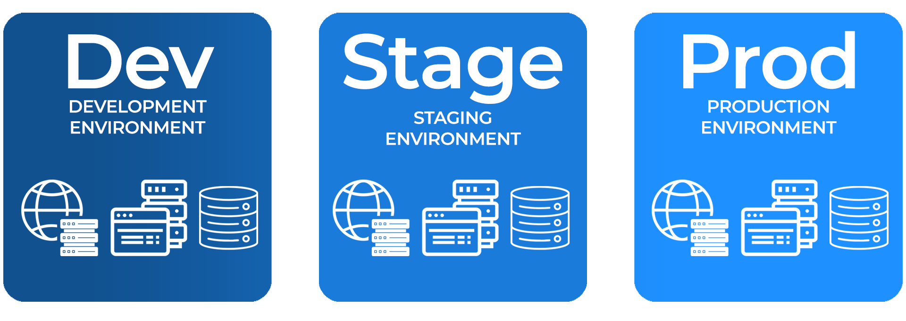
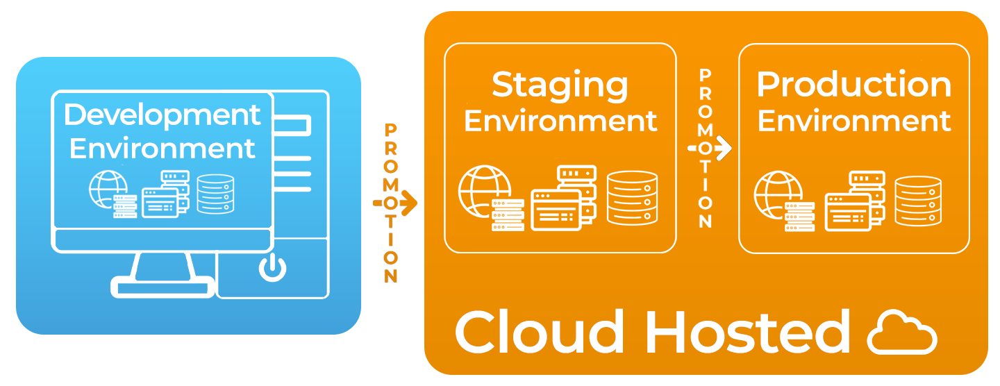
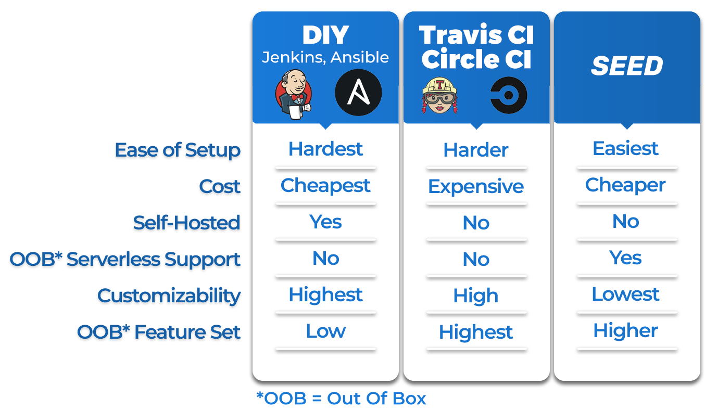

Case Study
1. Introduction
Problem Definition
Deployment is the process of moving application code from a developer’s machine to infrastructure that serves the application. Traditionally, software engineers were tasked with developing code, and operations teams were in charge of deploying that code1. This separation of responsibilities relied on consistent communication, trust, and collaboration between development and operations teams to integrate new code despite each team having unique goals, responsibilities, and even cultures. Any friction between these teams meant additional time taken between software releases for the development team to make corrective code changes or for the operations team to assess, test, and offer feedback on problematic features.
To speed up development cycles and make application maintenance easier, many organizations have adopted the cultural philosophy of DevOps, under which development and operations are combined into a single team. DevOps strengthens the bond between development and operations tasks so that code can be incrementally written, tested, and monitored as it is developed. This enables quicker feedback on iterations which means shorter development cycles and quicker delivery of features to production. However, not all developers have experience with the steps required to deploy code, and even fewer have experience with the nuances of deploying to the cloud. Teams whose developers fit this description need a solution that takes on much of the operations responsibility so they can focus on development while still benefiting from a culture of DevOps.
CI/CD (Continuous Integration & Continuous Delivery)
As development teams work together to iterate on an application, an important measure is validating that each individual developer’s code changes are acceptable for integration into the application’s main code base. Software development teams are often composed of multiple engineers, so it is beneficial to combine their contributions into a single functioning and testable artifact that is a candidate for being released to end users. With an interest in rapid release cycles, DevOps teams turn to automation to accomplish such integration, and this automated process is known as continuous integration2.
A fundamental step for teams to achieve continuous integration is committing all code changes to a shared repository in a version control system like GitHub. With all of an application’s code being sent to the same place, development teams can track application revisions, solve code merge conflicts, and run automated processes like testing or code quality scans every time a change occurs. As such, a version control system is key to continuous integration as it acts as a single source of versioned code - or a source of truth - to build a comprehensive artifact that can be deployed as a full application.
However, continuous integration is only part of the story. Once code contributions are compiled into a single artifact, the functionality of the artifact itself should be tested to ensure that it is ready for end users. Teams can achieve this by deploying it to infrastructure that runs the application and makes it available for developers to interact with it. They can then scrutinize its functionality and run various tests to assess its performance3. As a result, developers can verify application changes across multiple dimensions and develop confidence that they are ready for production. Continuous delivery is a DevOps practice that automatically deploys all code changes so teams can carry out these validation steps and effectively prepare a code artifact for a release to production3. Deployment environments play a key role in this practice.
Deployment Environments
An early concern for teams when it comes to continuous delivery is to separate the resources which serve the application to customers and the resources which developers utilize for pre-production testing. This is to ensure that end users are not exposed to potentially-problematic code that has not been fully vetted. The discrete sets of resources to which an application is deployed are referred to as environments4.
A common set of deployment environments are development, staging, and production5.
Development environments allow developers to test their potentially-problematic changes by deploying them in isolation. Introducing this code to real users might expose them to breaking changes or render the application unavailable, which could have a real monetary cost for organizations that depend on users for profit. Applications that run in development environments are not exposed to end users and are instead only used by developers for trying out their new code and making sure that it runs. As such, these environments do not generally need the same resource capacity as downstream environments where more-intensive verifications take place. Further, development environments can be updated more rapidly and thus allow for faster iteration for the developers utilizing them6.
Staging environments7 are like development environments in that end users do not interact with them. However, they tend to be more complex with more-robust resources because they are meant to replicate the environment that will serve end users. This enables teams to test how the application will behave for end users and also provides a suitable target for simulating real-world interaction with the application via methods like UI testing, load testing, integration testing, API reliability testing, etc.
Lastly, production environments contain the infrastructure that serves end users. Code that runs on this environment has generally been thoroughly vetted enough to be trusted for release. The resources for this environment must have sufficient capacity to serve the application at scale. As such, the production environment may contain many servers in order to handle the web traffic, request processing and storage required by the application.
Deployment Pipelines
Simply having multiple deployment environments is not enough to ensure that a code artifact is ready for production. What is needed is a process for moving code artifacts from version control through these environments so that they can be increasingly vetted and improved as they progress toward production. This process is referred to as a deployment pipeline. A deployment pipeline’s early stages (e.g. development environment) can run automated tests to find most problems yielding early feedback, while later stages (e.g. staging environment) often provide slower, even manual probing of features. When an application’s developers are satisfied with its performance in one environment, they can progress it to the next environment in a step called promotion. As code is promoted through a pipeline, teams can develop confidence in its capacity to adequately serve users.
One option is for teams to manually promote code through a deployment pipeline’s environments. This might entail cloning code from a version control system, injecting environment variables that the application uses, and entering a series of commands to deploy the code and run relevant tests. While this technique yields the productivity gains of a deployment pipeline, it is potentially error-prone as it requires that the developer execute the right steps in the proper order every time. In addition, this manual approach takes up valuable time that could otherwise be spent on continuously improving the application. A more-effective approach is to automate the operations duties related to deployment so teams can reap the benefits of a DevOps culture and continuous delivery while still being able to focus their time and energy on development-related tasks.
Automatic deployments are often initiated in response to changes to the source code in a team’s version control system, such as GitHub. For instance, engineers may develop new application features on the main branch of their GitHub repository and this branch might have a development environment associated with it. Their deployment pipeline might be configured so that any commits to the branch will trigger a deployment of the updated code to the corresponding environment. Other teams may want to retain manual control over promoting code to production environments to make it impossible for sneaky bugs to reach end users without explicit approval from a human. Nonetheless, even they can benefit from automating the deployment steps that take place after manual approval.
In an automated deployment pipeline, the bulk of such automation is handled by a build server8. Its work generally involves:
- Obtaining the code to be deployed from source control
- Running any commands or scripts to deploy resources
- Conducting testing (e.g. unit tests) prior to deployment
- Producing deployment logs which indicate deployment status to developers and convey any errors that may have occurred throughout the process
A common feature of automated deployment pipeline tools is a centralized dashboard which teams can use to interact with their pipelines. This dashboard can display deployment logs, provide control over the manual steps in the deployment pipeline, and generally provide transparency into the processes carried out by the build server.
Three major approaches to deployment include on-premise, cloud-hosted, and serverless paradigms. Deployment pipelines can be implemented differently depending on the infrastructure involved in each approach.
Approach 1 - Deploying On-Prem
One deployment approach involves deploying an application to on-premises (on-prem) equipment. ‘On-prem’ refers to server hardware that is managed and fully-controlled by the developing organization.
Maintaining on-prem infrastructure often requires significant capital expenditures to obtain the hardware necessary to host the application and keep up application performance. This includes the time and monetary costs related to all aspects of caring for machines such as replacing parts, ensuring reliable power delivery, maintaining network connections, physical security, and more.
Deploying a three-tier application on-prem would involve deploying web, application and database servers on the company’s own hardware. An on-prem deployment pipeline tool will deploy code to staging and production environments that exist on these on-prem machines. Meanwhile, development environments would likely exist on the team’s local machines which are capable of hosting all three application tiers and replicating their performance in production.

Approach 2 - Deploying a Cloud-Hosted Application
For small teams that lack the time or expertise needed to maintain physical infrastructure, it makes sense to avoid the responsibilities of on-prem hosting in favor of cloud hosting9. Cloud hosting refers to deploying an application on machines managed by a third party, such as Amazon Web Services (AWS). As the cloud provider, AWS would manage the physical servers on behalf of the team and run the data center locations where these servers are located. The team would only need to deploy their code to the cloud and rest assured that the underlying hardware will be maintained as needed. While the developers are still responsible for configuring aspects of their infrastructure like networks, data storage, and scalability, offloading physical server management lets them place more focus on application development and less on systems administration.
Cloud providers generally employ some form of consumption-based billing, often measured in time and/or compute resources. Depending on application usage patterns, this can be more expensive than running on-premise hardware, but it allows teams to serve their users without requiring a large initial up-front infrastructure investment. In essence, they can run their code on enterprise-level machines without having to buy enterprise-level machines.
The work of a deployment pipeline for a cloud-hosted application is similar to that of on-prem deployments for simple applications. As long as the development team is willing to generate hardware specifications of the servers for a cloud provider to provision, the application components - the web server, application server, and database server - can just be moved to the cloud provider’s infrastructure. As a result, the servers hosting the staging and production environments can be similar to those used in the on-prem deployment approach, and developers can often continue to use local development environments to refine preliminary code changes.
Approach 3 - Deploying a Serverless Application
Serverless is a model which can be understood as a subclass of cloud-hosted applications. Rather than hosting virtualized versions of web, application and database servers, the cloud providers expose services which abstract away the underlying virtual servers (on top of the physical ones)10. The canonical example of serverless is functions-as-a-service (FaaS). FaaS functions are individually-defined units of executable logic, and when invoked the cloud provider runs spins up instances of individual functions on their servers. These instances are ephemeral, or impermanent, in that they are provisioned, invoked, and then deprovisioned all according to demand.
Serverless resources generally have the following characteristics11:
- Auto-scaling - resources will automatically scale in or out depending on demand
- High availability - resources are served from redundant physical servers which reside in multiple locations, limiting downtime in case some fail
- Pay-for-use billing - billing is based on consumption, which may include compute time, stored data or data transfer
- No infrastructure management
Small teams with limited DevOps experience can benefit from the simplicity of managing serverless applications. Other applications, especially those with very bursty traffic, can benefit from the auto-scaling and pay-for-use nature of serverless resources.
However deployment considerations mark a major difference between serverless and non-serverless applications. Consider converting a three-tier application to a serverless application; what was a single web server may now consist of an API gateway and a bundle of serverless functions. The application server is also a bundle of serverless functions, and the HTML it used to serve may be stored in a geographically-distributed object storage service for static assets.
Deploying this application will be very different from deployment in the on-premise and cloud-hosted models. In those approaches, infrastructure is only defined and provisioned once: when purchasing physical on-prem equipment or when provisioning long-running cloud resources. But for serverless applications, only the resource definitions are persistent. These definitions are stored by the cloud provider so that corresponding infrastructure components can be provisioned on demand and only as needed. Moreover, deployment environments for a serverless application cannot simply be managed as separate sets of persistent application infrastructure. Consequently, deployment pipelines for a serverless application need to maintain the logical separation of deployment environments and their unique resources despite them all being ephemeral and distributed in nature. This can be accomplished by provisioning distinct copies of each serverless resource, effectively deploying a separate, fully-functioning version of the application for each deployment environment.
Development environments present a larger issue - no longer can a developer simply run a local version of their application because it is difficult, if not impossible, to recreate the network and compute conditions of an inherently-distributed serverless application. While local mocking solutions for cloud environments do exist12, the best way to see how an application performs in a distributed cloud environment is by running it in a distributed cloud environment13. Thus, running a development environment that more closely matches staging and production improves the developer experience. Fortunately, the pay-for-use model of serverless also means that these development environments will not incur costs as high as those of the production environment which is exposed to public traffic, even if it is composed of the same resources.

Existing Tools
Unsurprisingly, there are a number of tools designed to offer deployment pipeline solutions, each with their strengths and weaknesses.
One option is for teams to use open-source tools to develop an automated deployment pipeline in-house. These DIY solutions can be attractive to those who want a fully-customized pipeline that tightly integrates with their particular development workflow, but they require a significant time investment to build. There are free, open-source automation platforms like Jenkins or Red Hat’s Ansible which aim to speed up the DIY approach, but these tools still take considerable time to research and answer questions like “What is the scope of the platform?” and “Which of its available tools and plugins are relevant to the use case at hand?” In general, in-house solutions are cheaper and highly-customizable, but are more complex to set up. This is impractical for smaller teams who don’t have the bandwidth to design and manage an entire deployment application on top of their regular responsibilities.
Another class of options are third-party or SaaS deployment pipelines such as TravisCI or CircleCI. These pre-configured tools accommodate a wide range of deployment scenarios and preferences by providing feature-rich platforms for developing, testing, and releasing projects. However, this comprehensive personalization comes at a price. Namely, these solutions require paid plans that can be costly. It can also be difficult to navigate their complex workflows, wide feature sets and available plugins.
There also exist products targeting smaller niches, such as Seed (seed.run). Seed is a SaaS deployment pipeline designed for serverless applications in particular. Out of the box, it supports a more-narrow set of development methods than Jenkins, Ansible, CircleCI andTravisCI, and as a result has a comparatively lower configuration complexity. It is heavily-opinionated in that it only supports applications built on the Serverless Framework or the Serverless Stack (SST) framework, only accepts code from three of the most popular version control systems, and only deploys applications to AWS. While these limitations render Seed unsuitable for many software development workflows, they enable Seed to abstract away most of the complexity for its target users. Out of the box, it requires no buildspec files or deployment scripts, enables multiple environments per app, and provides a simple web-based dashboard for managing and monitoring deployments with just a few clicks.
Seed is a mature tool with many features. For example, it offers email and webhook deployment notifications, supports multiple version control systems, and provides metrics for serverless functions and serverless APIs 1415. But tools like Seed are not without their drawbacks. For example, Seed owns and operates its own pipeline infrastructure completely. Because of this, users do not have complete control over their build servers or the databases that store sensitive information such as build metadata, environment variables, and AWS IAM credentials. Further, Seed is not open-source, meaning there is almost no recourse for users who want to tweak or customize the underlying code. For instance, there is no way to alter the memory configuration of a build server or specify a particular region in which a deployment should occur. In essence, when teams use a tool like Seed, they put full trust in its ability to keep their information secure and predict all user needs in advance. Not all teams will be comfortable providing this level of trust; some will need a solution that is as opinionated and low-config as Seed, but with a different set of tradeoffs that give the user full control of the pipeline’s infrastructure and the data that it relies on. We built Trellis to meet this need.

Enter Trellis

What is Trellis?
Trellis is a low-config, continuous delivery deployment pipeline for teams who develop serverless applications on AWS. It handles the complexity of setting up automated deployment pipelines for its users, making it suitable for teams who want to spend less time on operations and more time on feature development. As an open-source and self-hosted application, Trellis users get a low-config deployment pipeline out of the box and still maintain control of their data.
What Can Trellis Do?
Get Code From GitHub
When users log into Trellis, they can create new applications and specify a GitHub repository that provides each application’s source code. By default, each new application gets three deployment environments - development, staging, and production - and more can be defined in settings. The development environment is connected to the selected repository’s main branch so that commits to main can be quickly deployed to a cloud environment. Users can configure other git branches to provide source code to each deployment environment as desired.
Deploy
When code is committed to an application’s GitHub repository, Trellis automatically starts deploying the new code to any environment that is configured to deploy that branch. If users want to deploy a commit that occurred before Trellis was configured, users can manually deploy the most-recent commit for any branch.
Promote
With the click of a button, Trellis users can promote code to the next environment once its developers are confident in its performance. Because pushing new versions to production without approval can harm the business by exposing end users to errors, bugs, or problematic infrastructure changes, Trellis ensures that the production environment is not configured for automatic deployments. Manual promotion to production is the only way to deploy an application to end users.
Teardown
In some instances, Trellis users might deploy their code, only to decide that it needs to be developed further and should not proceed through the pipeline. There is no need to leave the application running in such cases, so Trellis equips each deployment environment with a teardown button for removing all of the cloud resources associated with a deployed application.
Rollback
Sometimes, problematic code will be deployed to an environment and the development team will want to revert the environment back to a previously-trusted application version. For instance, if a mis-typed database query breaks an application’s functionality, end users should be insulated from the change and served an older version instead. Trellis anticipates these scenarios and provides a rollback button for all deployment environments. Users can click this button and select a previous application version to re-deploy, or “roll back” to.
Test
Unit tests can give confidence that code is behaving as expected. If the tests are comprehensive and the code is passing the tests, then developers can have confidence that things are working as expected. In Trellis, users can toggle unit testing for each deployment environment so they can see the output of the `npm run test` command each time a deployment takes place. If they need to run tests via a different command, they can configure that too.
What is Trellis Composed Of?
With its features, Trellis solves the problem of validating code changes and putting them into environments where they can be promoted through a deployment pipeline to production. Three high-level components work together to fulfill this responsibility: a build server, a dashboard, and a backend.
The Build Server

Trellis’ build server executes deployments to their target environments from an isolated machine and ensures that unique cloud resources are provisioned for each environment. This build server also performs teardowns and rollbacks for all deployment environments as requested by users. Executing these jobs on isolated machines ensures consistent reliability as there is no opportunity for a developer or their local tools and dependencies to interfere with the process.
The Backend
The backend facilitates communication between the build server and the dashboard. Its database stores user login information, environment-specific settings, GitHub repository data, deployment environment status (e.g. deploying, deployed, tearing down), and logged output from the build server. Its API is responsible for initiating the build server, updating the database, and passing relevant data between the dashboard and build server so they can carry out their respective duties.
The Dashboard
Trellis’ dashboard gives users a way to interact with their deployment pipelines. It displays the state of the deployment pipelines to users, provides configuration settings for customizing and managing their deployment environments, and displays controls for managing all of the pipeline’s features and triggering any manual steps of their pipelines.
Architecture
2.1.3 Serverless Development
With IaC, engineers can document, edit, distribute, and replicate their infrastructure configurations using a familiar programming language2-5. As such, application infrastructure can be coupled with the logic that depends on it, turning source code and its corresponding builds into comprehensive artifacts that define everything the application needs to function [^5]. Because these artifacts precisely codify the infrastructure they rely on, they can be deployed with minimal manual configuration.
2.1.4 Serverless Development With Serverless Stack
There are several cloud providers, each with multiple IaC tooling solutions for developers to choose from. The options include first-party solutions offered by the cloud provider directly (e.g. AWS CDK, GCP Deployment Manager, Axure Bicep), vendor-agnostic tools built on first-party APIs (e.g. Terraform, Pulumi), and even frameworks that abstract away common configurations and implement opinionated approaches to common full-stack development practices (e.g. Serverless Framework, Serverless Stack).
In developing Trellis we have specifically chosen to support applications developed using the Serverless Stack (SST) Framework. SST is a JavaScript framework which extends AWS CDK. In addition to being an IaC tool it offers several useful features for developers of serverless applications. We chose to support SST because it[^6]:
- Strives to make it easy to build serverless applications on AWS, and AWS is the most-widely-used cloud provider, consuming 30% of the global cloud market
- Provides high-level, composable constructs designed specifically for serverless applications, but also supports native CDK constructs when needed.
- Is built on the AWS JavaScript CDK (Cloud Development Kit), which makes it accessible to millions of JavaScript users around the world.
- Offers development tools like an infrastructure management console and live local lambda development, which enables debugging breakpoints and instant feedback on changes made to lambda functions.
While these features make SST a helpful development framework, developers still need to implement best practices throughout the entire software development life cycle to consistently release quality work. In particular, Trellis builds on SST to help teams follow some of the best practices regarding application deployment.
References
- https://www.atlassian.com/devops
- https://www.atlassian.com/continuous-delivery/continuous-integration
- https://aws.amazon.com/devops/continuous-delivery/
- https://medium.com/@gwright_60924/software-delivery-101-environments-and-applications-8fff2c4e2524
- https://www.itprotoday.com/devops-and-software-development/development-staging-and-production-model
- https://vshosting.eu/blog/development-and-production-why-separate-them-at-all-costs
- https://dltj.org/article/software-development-practice/
- https://www.martinfowler.com/articles/continuousIntegration.html
- https://www.rackspace.com/sites/default/files/white-papers/national-kidney-registry-steams-with-rackspace-to-make-miracle-matches.pdf
- https://martinfowler.com/articles/serverless.html#WhatIsServerless
- https://aws.amazon.com/serverless/
- https://github.com/localstack/localstack
- https://serverlessfirst.com/emails/testing-serverless-backends-survey-results-+-the-local-vs-cloud-debate/
- https://seed.run/docs/viewing-metrics
- https://seed.run/docs/adding-build-notifications